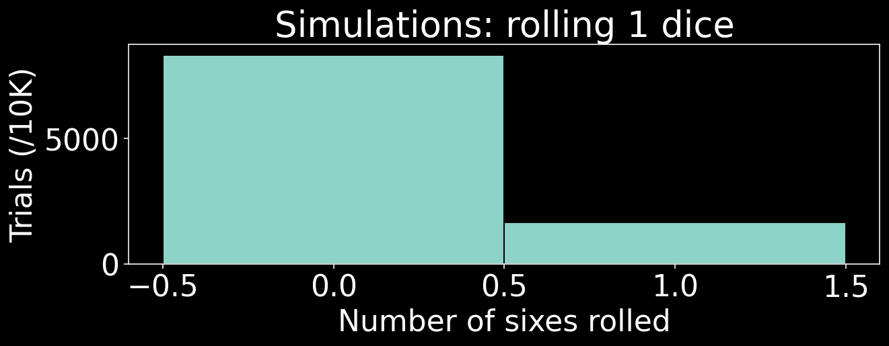
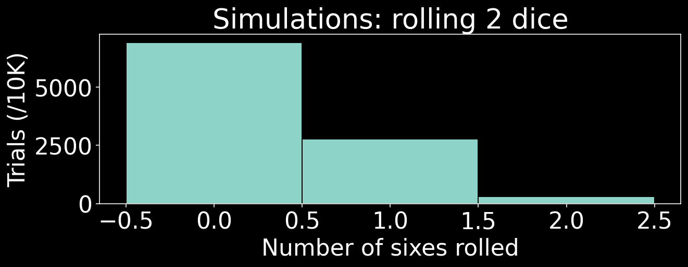
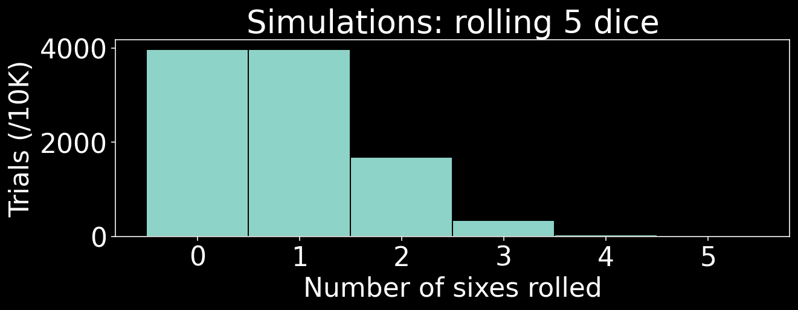
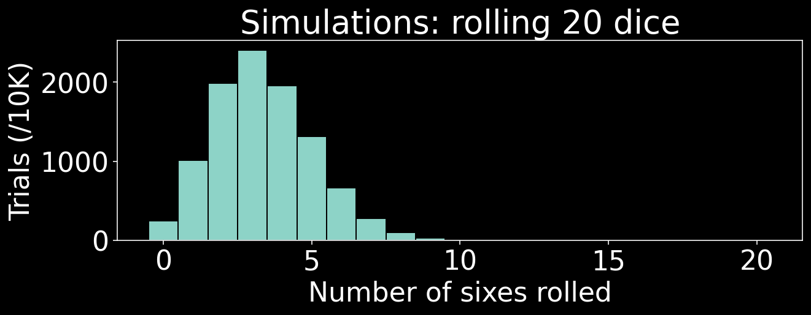
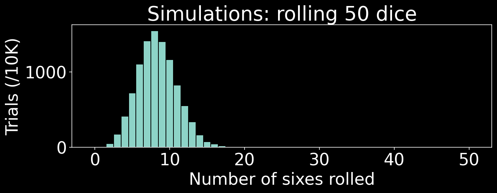
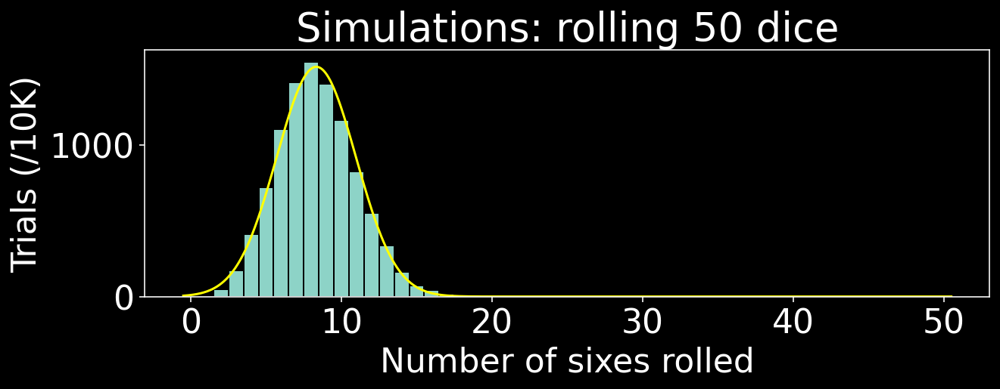
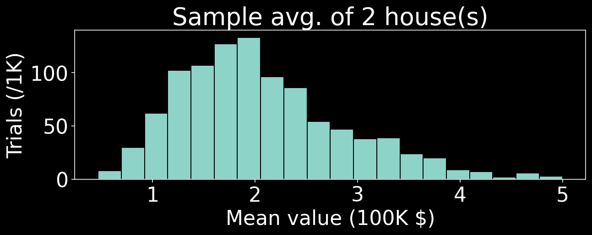
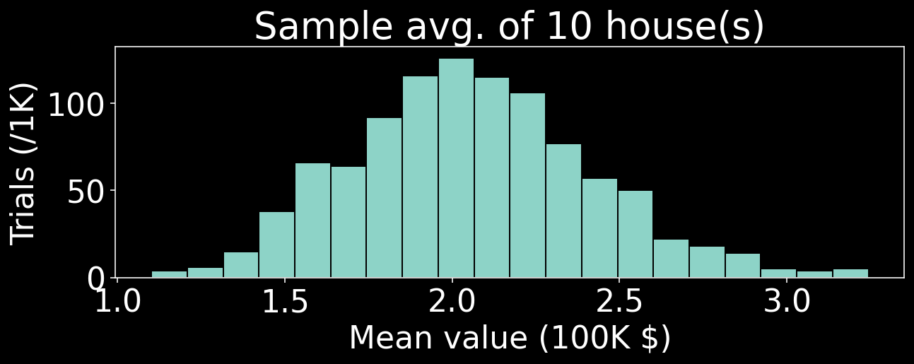
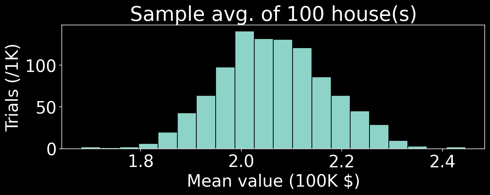
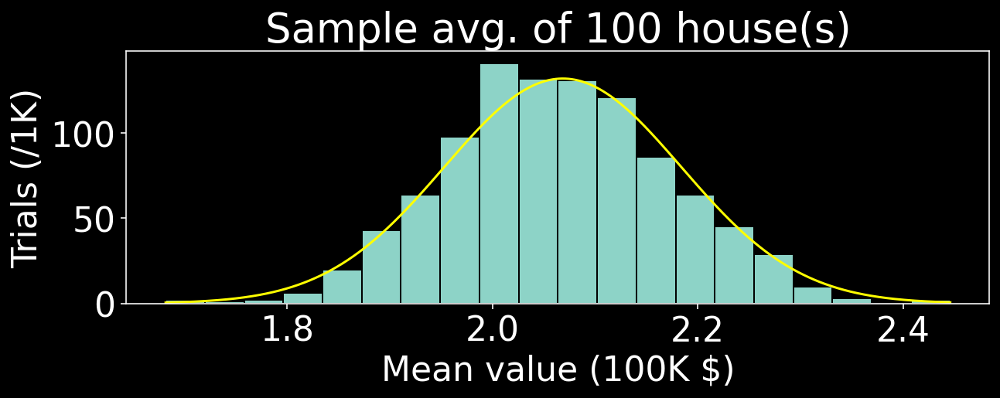

Problem: You roll ten standard dice. What is the probability that between two and four of them (inclusively) land on six?
\(\quad \binom{10}{2} \left(\frac 1 6 \right)^2 \left(\frac 5 6 \right)^8 + \binom{10}{3} \left(\frac 1 6 \right)^3 \left(\frac 5 6 \right)^7 + \binom{10}{4} \left(\frac 1 6 \right)^4 \left(\frac 5 6 \right)^6\)
\(= \frac{3,359,375}{6,718,464} \approx \fbox{0.5000}\)
Idea: Estimate probability by simulating experiment many times
Problem: You roll ten standard dice. What is the probability that between two and four of them (inclusively) land on six?
Theoretically-derived answer: \(\frac{3,359,375}{6,718,464} \approx \fbox{0.5000}\)
import numpy as np
rng = np.random.default_rng()
def ten_dice_problem():
die_rolls = np.array([rng.integers(1, 7) for i in range(10)])
num_sixes = sum(die_rolls == 6) # count sixes in die_rolls
return (num_sixes >= 2) and (num_sixes <= 4) # output is T or F
print(np.mean([ten_dice_problem() for i in range(10000)]))0.4992Benefits of Monte Carlo simulations:
Problem: You roll \(n\) standard dice; let \(X\) be the number of them that land on 6. What is the probability distribution of \(X\)?
def plot_sixes_count(n_dice, show_curve):
# reset random number generator (for reproducibility on graphs)
# this particularly matters for the two n = 50 graphs where I want
# the same graph repeated but with a normal density grafted on
rng = np.random.default_rng(seed=6538)
def count_sixes(n_dice):
die_rolls = np.array([rng.integers(1, 7) for i in range(n_dice)])
return sum(die_rolls == 6)
fig, ax = plt.subplots(figsize = (10, 3))
x_range = np.linspace(-0.5, n_dice + 0.5, num = n_dice + 2)
x_range_full = np.linspace(-0.5, n_dice + 0.5, num=1000)
# histogram of sixes among 10K die rolls
ax.hist([count_sixes(n_dice) for i in range(10000)],
bins = x_range, edgecolor = 'black')
# overlay curve (if needed)
if show_curve:
norm_mean = 1/6 * n_dice
norm_sd = (n_dice * 1/6 * 5/6) ** (1/2)
ax.plot(x_range_full,
norm.pdf(x_range_full, norm_mean, norm_sd) * 10000,
color = 'yellow')
# set general options and plot
ax.set_title('Simulations: rolling ' + str(n_dice) + ' dice')
ax.set_xlabel('Number of sixes rolled')
ax.set_ylabel('Trials (/10K)')
plt.show()
plot_sixes_count(1, False)
Problem: You roll \(n\) standard dice; let \(X\) be the number of them that land on 6. What is the probability distribution of \(X\)?
Problem: You roll \(n\) standard dice; let \(X\) be the number of them that land on 6. What is the probability distribution of \(X\)?
Problem: You roll \(n\) standard dice; let \(X\) be the number of them that land on 6. What is the probability distribution of \(X\)?
Problem: You roll \(n\) standard dice; let \(X\) be the number of them that land on 6. What is the probability distribution of \(X\)?
Problem: You roll \(n\) standard dice; let \(X\) be the number of them that land on 6. What is the probability distribution of \(X\)?
From the famous California Housing dataset:
Consider a random sample of \(n\) California house values. What is the distribution of the sample average?
from statistics import stdev
def sample_houses(n_houses, seed):
chosen_values = housing.frame.MedHouseVal.sample(n_houses, random_state=seed)
return chosen_values.mean()
def plot_sample_houses(n_houses, show_curve):
fig, ax = plt.subplots(figsize=(10, 3))
# draw 10K copies of sample of appropriate size
sample_means = [sample_houses(n_houses, i) for i in range(1000)]
x_range = (min(sample_means), max(sample_means))
bin_width = (x_range[1] - x_range[0]) / 20
# make histogram
ax.hist(sample_means, edgecolor='black', bins=20)
# draw curve, if requested
if show_curve:
norm_mean = housing.frame.MedHouseVal.mean()
norm_sd = stdev(housing.frame.MedHouseVal) / (n_houses) ** (1/2)
x_range_linspace = np.linspace(x_range[0], x_range[1], num=1000)
ax.plot(x_range_linspace,
norm.pdf(x_range_linspace, norm_mean, norm_sd) * 1000 * bin_width,
color='yellow')
# plot options
ax.set_title('Sample avg. of ' + str(n_houses) + ' house(s)')
ax.set_xlabel('Mean value (100K $)')
ax.set_ylabel('Trials (/1K)')
plt.show()Consider a random sample of \(n\) California house values. What is the distribution of the sample average?
Consider a random sample of \(n\) California house values. What is the distribution of the sample average?
Consider a random sample of \(n\) California house values. What is the distribution of the sample average?
Consider a random sample of \(n\) California house values. What is the distribution of the sample average?
Suppose you randomly draw letters one at a time (without replacement) until the first time you draw one out of order, after which you stop. What is the expected number of letters you will draw?
Example: If you draw B \(\rightarrow\) G \(\rightarrow\) W \(\rightarrow\) K, then you have stopped after 4 letters.
Suppose you randomly draw letters one at a time (without replacement) until the first time you draw one out of order, after which you stop. What is the expected number of letters you will draw?
Suppose you randomly draw letters one at a time (without replacement) until the first time you draw one out of order, after which you stop. What is the expected number of letters you will draw?
trial_results = [letters_draw() for i in range(10000)]
fig, ax = plt.subplots(figsize=(10, 3))
ax.hist(trial_results,
bins=np.linspace(1.5, max(trial_results) + 0.5, num=max(trial_results)),
edgecolor='black')
ax.set_xlabel('Number of letters drawn')
ax.set_ylabel('Simulations (/10K)')
ax.set_title('Results of letters_draw()')
plt.show()Suppose you randomly draw letters one at a time (without replacement) until the first time you draw one out of order, after which you stop. What is the expected number of letters you will draw?
\(\mathbb E[N] = \mathbb E \left[1 + 1 + 1_{1 < 2} + 1_{1 < 2 < 3} + \dots + 1_{1 < \dots < 25} \right]\)
\(\phantom{\mathbb E[N]} = 1 + 1 + \mathbb E \left[1_{1 < 2} \right] + \mathbb E \left[1_{1 < 2 < 3} \right] + \dots + \mathbb E \left[1_{1 < \dots < 25} \right]\)
\(\phantom{\mathbb E[N]} = 1 + 1 + \frac 1 2 + \frac 1 {3!} + \dots + \frac 1 {25!}\)
\(\phantom{\mathbb E[N]} = \frac{1}{0!} + \frac{1}{1!} + \frac 1 2 + \frac 1 {3!} + \dots + \frac 1 {25!} = \sum_{k=0}^{25} \frac{1}{k!}\)
Advantages of the Monte Carlo approach:
Advantages of the theoretical approach:
The best thing to have is… BOTH!
A referee flips a coin many times. Izzy bets on the sequence HHT; Moore bets on the sequence HTH. The winner is the one whose sequence comes up first. What is the probability of each player winning?
Answer: not 50/50
I have a bag that contains 20 Skittles and 100 M&Ms. Each day, I draw one candy, note its type, and eat it. I then continue drawing candies and eating them so long as they’re the same type – but when I draw one of the other type, I put it back and stop for the day.
What is the probability that the last candy will be a Skittle?
Answer: not what I first guessed
GitHub page should have: questions, simulation solutions, and the mathematical proofs